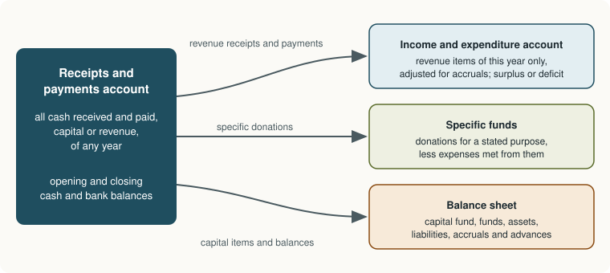

Chapter 9: Accounts of Non-Profit Organisations¶
Clubs, societies and charities: receipts and payments, income and expenditure, and the capital fund
Learning outcomes
After studying this chapter you should be able to:
- Describe a non-profit organisation and the special features of its accounts.
- Prepare a receipts and payments account and explain its limitations.
- Distinguish the receipts and payments account from the income and expenditure account.
- Treat the special items of non-profit organisations: subscriptions, entrance fees, donations, legacies and specific funds.
- Find the opening capital fund and prepare an income and expenditure account and a balance sheet from a receipts and payments account with additional information.
9.1 Organisations that do not seek profit¶
Not every organisation exists to make a profit for its owners. Sports clubs, residents' welfare associations, libraries, professional associations, schools and hospitals run by trusts, religious bodies and charities exist to serve their members or the public. They are called non-profit organisations (or not-for-profit organisations). Their income comes mainly from members' subscriptions, donations, grants, entrance fees, and the income from their investments and activities.
Such an organisation still needs accounts. Its members want to know how their money has been used, donors want assurance that their gifts went where they were meant to, and the law (registration of societies and trusts, and tax exemptions) usually requires accounts to be kept and audited. The principles are the same as for a business, with differences of name and emphasis:
| In a business | In a non-profit organisation |
|---|---|
| Capital | Capital fund (general fund, accumulated fund) |
| Profit | Surplus (excess of income over expenditure) |
| Loss | Deficit (excess of expenditure over income) |
| Trading and profit and loss account | Income and expenditure account |
| Cash book (summarised) | Receipts and payments account |
| Owner | Members; no one is entitled to the surplus |
Table 9.1. Business terms and their non-profit equivalents.
The surplus is not distributed to anyone. It is added to the capital fund and used for the organisation's purposes.
The final accounts of a non-profit organisation usually consist of:
- a receipts and payments account, a summary of the cash book;
- an income and expenditure account, the equivalent of the profit and loss account;
- a balance sheet.

9.2 The receipts and payments account¶
The receipts and payments account is a summary of the cash book for the year, classified under suitable heads. It begins with the opening balance of cash and bank, lists all receipts on the debit side and all payments on the credit side, and ends with the closing balance. Its features:
- It records cash transactions only, actual receipts and payments, whatever period they relate to: subscriptions received for last year and next year are included along with this year's.
- It includes both capital and revenue items: the purchase of furniture and the payment of salaries appear side by side.
- It does not include non-cash items such as depreciation, outstanding expenses or accrued income.
- Its balance is the cash and bank balance, a debit (or, for an overdraft, a credit).
Many small organisations publish only this account. It shows where the cash came from and where it went, but it does not show whether the year's income covered the year's expenses, because it mixes capital with revenue and one year with another. That is the job of the income and expenditure account.
9.3 The income and expenditure account¶
The income and expenditure account is prepared on the accrual basis, like a profit and loss account. It includes only revenue items relating to the current year: incomes on the credit side and expenses on the debit side, after adjusting for outstanding and prepaid amounts, accruals and depreciation. The balance is a surplus (credit side larger) or deficit (debit side larger), transferred to the capital fund.
| Point | Receipts and payments account | Income and expenditure account |
|---|---|---|
| Nature | Summary of the cash book; a real account | Equivalent of the profit and loss account; a nominal account |
| Basis | Cash basis | Accrual basis |
| Items | Capital and revenue | Revenue only |
| Period | Receipts and payments of any year | Income and expenditure of the current year only |
| Non-cash items | Not included | Included (depreciation, outstanding, accrued) |
| Opening balance | Cash and bank balance | None |
| Closing balance | Cash and bank balance | Surplus or deficit |
| Sides | Receipts debit, payments credit | Expenditure debit, income credit |
Table 9.2. The two accounts compared.
9.4 Special items¶
Several items are peculiar to non-profit organisations, and their treatment as capital or revenue decides what goes into the income and expenditure account.
- Subscriptions are periodic payments by members. They are the main revenue item. Only the subscriptions for the current year are income: those received for past years are not, and those received in advance are a liability; subscriptions due but not received are an asset (Section 9.5).
- Entrance (admission) fees are paid once by new members. Being recurring in nature for the organisation (some new members join every year), they are commonly treated as revenue; some organisations capitalise them, wholly or partly, under their own rules. Follow the organisation's stated policy.
- Life membership fees are paid once in place of annual subscriptions for life. They are usually capitalised (added to the capital fund or kept in a life membership fund), because they relate to many future years.
- Donations without any condition are revenue if small and regular; a large, non-recurring donation may be capitalised. A specific donation, given for a stated purpose (a building, a prize, a tournament), is always capital and is credited to a separate fund.
- Legacies (amounts left by will) are capital receipts, credited to the capital fund.
- Sale of old assets is a capital receipt. The asset's book value is removed, and any profit or loss on sale goes to the income and expenditure account. The sale of old newspapers and similar scrap is a small revenue receipt.
- Grants from government or other bodies are revenue if for running expenses, capital if for buying assets.
- Honorarium is a payment to a person who is not an employee (a visiting coach, an honorary secretary): a revenue expense.
9.5 Subscriptions¶
Subscriptions received during a year usually include amounts for three periods: arrears of the previous year, the current year, and advances for the next year. The income for the current year is found by adjustment:
| ₹ | |
|---|---|
| Subscriptions received during the year (from receipts and payments account) | |
| Less: Subscriptions outstanding at the start of the year (received this year) | |
| Less: Subscriptions received in advance at the end of the year (for next year) | |
| Add: Subscriptions outstanding at the end of the year (for this year, not received) | |
| Add: Subscriptions received in advance at the start of the year (for this year, received last year) | |
| Subscriptions income for the current year |
Table 9.3. Adjusting subscriptions received to subscriptions income.
The same result is obtained by preparing a subscriptions account, as Example 9.1 shows.
Example 9.1 Subscriptions income
Greenfield Sports Club received ₹85,000 as subscriptions during 2025-26. Of this, ₹4,000 was for 2024-25 and ₹3,000 for 2026-27. Subscriptions outstanding on 1 April 2025 were ₹4,000, and on 31 March 2026 ₹5,000 was outstanding for 2025-26. There were no advances on 1 April 2025.
| Particulars | ₹ |
|---|---|
| Subscriptions received in 2025-26 | 85,000 |
| Less: For 2024-25 (arrears received) | (4,000) |
| Less: For 2026-27 (received in advance) | (3,000) |
| Received for 2025-26 | 78,000 |
| Add: Outstanding for 2025-26 | 5,000 |
| Subscriptions income for 2025-26 | 83,000 |
Subscriptions Account
| Particulars | ₹ | Particulars | ₹ |
|---|---|---|---|
| To Balance b/d (outstanding, 1 April 2025) | 4,000 | By Receipts and Payments A/c | 85,000 |
| To Income and Expenditure A/c (balancing figure) | 83,000 | By Balance c/d (outstanding, 31 March 2026) | 5,000 |
| To Balance c/d (received in advance) | 3,000 | ||
| Total | 90,000 | Total | 90,000 |
In the balance sheet at 31 March 2026, the ₹5,000 outstanding is an asset and the ₹3,000 received in advance is a liability.
9.6 The opening capital fund¶
When the capital fund at the start of the year is not given, it is found from a balance sheet at the start of the year (often called the opening statement of affairs): capital fund = assets − liabilities, both at the start of the year. Remember to include opening cash, outstanding and accrued items as well as fixed assets and investments.
9.7 A complete example¶
Example 9.2 Final accounts of Greenfield Sports Club
Receipts and Payments Account of Greenfield Sports Club for the year ended 31 March 2026
| Receipts | ₹ | Payments | ₹ |
|---|---|---|---|
| To Balance b/d (cash) | 12,000 | By Salaries | 36,000 |
| To Subscriptions | 85,000 | By Rent | 12,000 |
| To Entrance fees | 10,000 | By Sports equipment purchased | 30,000 |
| To Donations (general) | 15,000 | By Electricity | 6,500 |
| To Sale of old equipment | 2,500 | By Tournament expenses | 14,000 |
| To Interest on investments | 3,000 | By Printing and stationery | 3,500 |
| To Locker rent | 4,000 | By Investments purchased (31 March 2026) | 20,000 |
| To Donations for tournament fund | 20,000 | By Balance c/d (cash) | 29,500 |
| Total | 1,51,500 | Total | 1,51,500 |
Additional information
- On 1 April 2025 the club had: sports equipment ₹50,000; 10% investments ₹60,000; subscriptions outstanding ₹4,000; salaries outstanding ₹2,000; cash ₹12,000.
- Subscriptions as in Example 9.1: ₹4,000 of the receipts is for 2024-25, ₹3,000 for 2026-27, and ₹5,000 is outstanding for 2025-26.
- Salaries of ₹3,000 are outstanding on 31 March 2026; the payments include the ₹2,000 outstanding from last year.
- The equipment sold had a book value of ₹4,000.
- Depreciate sports equipment by 10% on its closing book value.
- Entrance fees and general donations are treated as revenue.
- Tournament expenses are to be met from the tournament fund.
Step 1: opening capital fund.
| Opening balance sheet, 1 April 2025 | ₹ |
|---|---|
| Sports equipment | 50,000 |
| Investments | 60,000 |
| Subscriptions outstanding | 4,000 |
| Cash | 12,000 |
| Total assets | 1,26,000 |
| Less: Salaries outstanding | 2,000 |
| Capital fund | 1,24,000 |
Step 2: workings.
- Subscriptions income = ₹83,000 (Example 9.1).
- Salaries = 36,000 − 2,000 (last year's) + 3,000 (this year's outstanding) = ₹37,000.
- Interest: 10% × 60,000 = ₹6,000 earned on the investments held all year; ₹3,000 received, so ₹3,000 is accrued. (The new investments were bought on the last day and earn nothing this year.)
- Loss on sale of equipment = book value 4,000 − proceeds 2,500 = ₹1,500.
- Sports equipment = 50,000 − 4,000 + 30,000 = ₹76,000; depreciation 10% = ₹7,600; closing book value ₹68,400.
- Tournament fund = 20,000 received − 14,000 spent = ₹6,000.
Income and Expenditure Account for the year ended 31 March 2026
| Expenditure | ₹ | ₹ | Income | ₹ | ₹ |
|---|---|---|---|---|---|
| To Salaries | 36,000 | By Subscriptions | 85,000 | ||
| Less: For 2024-25 | 2,000 | Less: For 2024-25 | 4,000 | ||
| 34,000 | Less: For 2026-27 | 3,000 | |||
| Add: Outstanding | 3,000 | 37,000 | 78,000 | ||
| To Rent | 12,000 | Add: Outstanding for 2025-26 | 5,000 | 83,000 | |
| To Electricity | 6,500 | By Entrance fees | 10,000 | ||
| To Printing and stationery | 3,500 | By Donations | 15,000 | ||
| To Depreciation on equipment | 7,600 | By Interest on investments | 3,000 | ||
| To Loss on sale of equipment | 1,500 | Add: Accrued | 3,000 | 6,000 | |
| To Surplus (transferred to capital fund) | 49,900 | By Locker rent | 4,000 | ||
| 1,18,000 | 1,18,000 |
Check: income 83,000 + 10,000 + 15,000 + 6,000 + 4,000 = ₹1,18,000; expenditure 37,000 + 12,000 + 6,500 + 3,500 + 7,600 + 1,500 = ₹68,100; surplus ₹49,900.
Balance Sheet of Greenfield Sports Club as at 31 March 2026
| Liabilities | ₹ | ₹ | Assets | ₹ | ₹ |
|---|---|---|---|---|---|
| Capital fund | 1,24,000 | Sports equipment | 50,000 | ||
| Add: Surplus | 49,900 | 1,73,900 | Less: Sold | 4,000 | |
| Tournament fund | 20,000 | Add: Purchased | 30,000 | ||
| Less: Tournament expenses | 14,000 | 6,000 | 76,000 | ||
| Subscriptions received in advance | 3,000 | Less: Depreciation | 7,600 | 68,400 | |
| Salaries outstanding | 3,000 | Investments (60,000 + 20,000) | 80,000 | ||
| Interest accrued | 3,000 | ||||
| Subscriptions outstanding | 5,000 | ||||
| Cash | 29,500 | ||||
| 1,85,900 | 1,85,900 |
Check: liabilities 1,73,900 + 6,000 + 3,000 + 3,000 = ₹1,85,900; assets 68,400 + 80,000 + 3,000 + 5,000 + 29,500 = ₹1,85,900.
Notice what the income and expenditure account leaves out: the purchase of equipment and investments (capital payments), the sale proceeds of equipment (a capital receipt; only the loss appears), and everything to do with the tournament fund (a specific fund kept separate from general income). Notice also what it puts in that the receipts and payments account lacks: depreciation, the loss on sale, outstanding salaries, accrued interest and outstanding subscriptions.
9.8 Specific funds¶
A specific fund is created when money is received for a particular purpose: a building fund, a prize fund, a tournament fund. The receipts are credited to the fund, not to income. Expenses met from the fund are debited to it, not to the income and expenditure account. The balance of the fund is shown on the liabilities side of the balance sheet. If the fund has been invested in securities, the income from those investments is also credited to the fund, and the investments are shown separately on the assets side.
If the expenses on the purpose exceed the fund, the excess is charged to the income and expenditure account (or, if the organisation's rules say so, shown as a debit balance to be made good from future receipts).
Caution
Do not take specific donations or the expenses met from them to the income and expenditure account. Doing so would overstate both income and expenditure and, if they did not match, would distort the surplus. A specific fund is held for its purpose, much as a trust is held for its beneficiaries.
9.9 Summary¶
Summary
- Non-profit organisations serve members or the public; their accounts use the terms capital fund, surplus and deficit, and the surplus is retained, not distributed.
- The receipts and payments account summarises the cash book: cash basis, capital and revenue items, any year, starting and ending with cash.
- The income and expenditure account is on the accrual basis: revenue items of the current year only, including non-cash items; its balance is the surplus or deficit.
- Subscriptions income = received − arrears of past years − advances for next year + outstanding for this year + advances received last year for this year.
- Life membership fees, legacies and specific donations are capital; entrance fees and general donations are usually revenue, according to the organisation's policy.
- The opening capital fund is the excess of opening assets over opening liabilities.
- Specific funds are shown on the liabilities side, less the expenses met from them.
9.10 Exercises¶
Exercise 1
A society received ₹1,20,000 as subscriptions in 2025-26, including ₹6,000 for 2024-25 and ₹4,000 for 2026-27. Subscriptions of ₹7,000 for 2025-26 were outstanding at the year end, and ₹2,500 for 2025-26 had been received in advance during 2024-25. Find the subscriptions income for 2025-26.
Answer
1,20,000 − 6,000 − 4,000 + 7,000 + 2,500 = ₹1,19,500.
Exercise 2
Classify as capital or revenue for a club: (a) life membership fees; (b) annual subscriptions; (c) a legacy of ₹2,00,000; (d) sale of old newspapers; (e) a donation for building a pavilion; (f) honorarium to a visiting coach.
Answer
(a) capital; (b) revenue; (c) capital; (d) revenue; (e) capital (specific fund); (f) revenue expense.
Exercise 3
On 1 April 2025 a library had books ₹1,50,000, furniture ₹40,000, cash ₹18,000, subscriptions outstanding ₹3,000, and rent outstanding ₹5,000. Find its capital fund.
Answer
Assets: 1,50,000 + 40,000 + 18,000 + 3,000 = ₹2,11,000. Liabilities: ₹5,000. Capital fund = ₹2,06,000.
Exercise 4
A club's prize fund stood at ₹50,000 on 1 April 2025, invested in 8% bonds. During the year interest of ₹4,000 was received on the bonds, donations of ₹10,000 were received for the fund, and prizes of ₹12,000 were awarded. Show the prize fund in the balance sheet at 31 March 2026.
Answer
| Liabilities | ₹ | ₹ |
|---|---|---|
| Prize fund | 50,000 | |
| Add: Interest on prize fund investments | 4,000 | |
| Add: Donations | 10,000 | |
| 64,000 | ||
| Less: Prizes awarded | 12,000 | 52,000 |
On the assets side, the prize fund investments (8% bonds) are shown at ₹50,000.
Exercise 5
Stationery used during the year must be found from: stock of stationery on 1 April 2025 ₹2,000; paid for stationery during the year ₹15,000; creditors for stationery on 1 April 2025 ₹1,500 and on 31 March 2026 ₹2,500; stock of stationery on 31 March 2026 ₹3,000. Compute the amount for the income and expenditure account.
Answer
Purchases of stationery for the year = paid 15,000 − opening creditors 1,500 + closing creditors 2,500 = ₹16,000. Consumption = opening stock 2,000 + purchases 16,000 − closing stock 3,000 = ₹15,000.
Exercise 6
Why can the receipts and payments account not show whether a club's activities were self-supporting during the year?
Answer
Because it is on the cash basis and mixes capital with revenue and one year with another. It includes capital payments (new equipment) and receipts (legacies, specific donations), receipts for past and future years, and leaves out depreciation and unpaid expenses. Only the income and expenditure account, which matches the year's revenue income with the year's revenue expenses, shows whether there was a surplus or a deficit.
9.11 Quiz¶
Check your understanding of Chapter 9
Exercise 1
The excess of income over expenditure of a non-profit organisation is called
- net profit
- surplus
- capital
- gross profit
Answer
surplus
Exercise 2
The receipts and payments account is prepared on the
- accrual basis
- cash basis
Answer
cash basis
Exercise 3
A donation received for building a library hall is
- credited to the income and expenditure account
- credited to a specific fund
- debited to the capital fund
Answer
credited to a specific fund
Exercise 4
Subscriptions received ₹50,000, of which ₹2,000 is for next year; ₹3,000 for this year is outstanding; nothing else. What is subscriptions income, in rupees?
Answer
51000 / 51,000 / ₹51,000
Exercise 5
Which item appears in the income and expenditure account but not in the receipts and payments account?
- Purchase of furniture
- Depreciation on furniture
- Opening cash balance
- Legacy received
Answer
Depreciation on furniture
Exercise 6
Life membership fees are usually
- treated as revenue of the year received
- capitalised
- ignored
Answer
capitalised